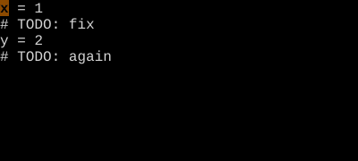
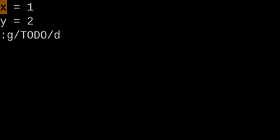

Global (:g) and Vglobal (:v)
"Run a command on every line that matches."
:g/pattern/cmd runs cmd on every line matching pattern. :v inverts (every NON-matching line). Combine with :d to delete-by-pattern, with :s to substitute-by-pattern, with :norm to do anything.
Global and Vglobal
:g/pattern/cmd is read as: for every line matching pattern, run cmd. It's how you do bulk operations gated by a search.
| Command | Effect |
|---|---|
| :g/TODO/p | Print every line containing TODO |
| :g/TODO/d | Delete every line containing TODO |
| :v/TODO/d | Delete every line NOT containing TODO |
| :g/^$/d | Delete all blank lines |
| :g/^/m0 | Reverse the file (move every line to top) |
| :g/foo/s//bar/g | Substitute on matching lines |
| :g/^class /norm o pass | On every class declaration, open new line + insert pass |
Worked example — :g/TODO/d
Run an Ex command on every matching line.


:g/pat/cmd runs cmd on each matching line. :v/pat/cmd runs on every NON-matching line.
Watch
- 📺 #0423 :set number (not yet published)
- 📺 #0425 :set hlsearch (not yet published)
See also: Substitute ({key::s}), Normal ({key::norm})